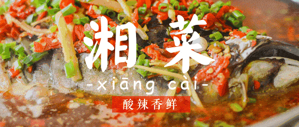
真的出乎我的意料，上一篇《作为一个土生土长的上海人，点评一下湾区各大江浙沪餐馆》的文章居然有3000+的阅读，成为我所有文章里阅读数最高的文章了，有点小开心。
所以我就遵守上一次文末的约定，这次来聊一下湾区的湖南菜馆。
我作为一个上海人，湖南菜也不知道什么是正宗的什么是不正宗的。这边就是列一些个人的主观意见，仅供参考。
第一梯队
跟之前那篇文章一样，这个梯队的餐厅属于我每隔一段时间就会去一次的那种。
不过总体来说湘菜我吃的比较少，所以好多餐馆印象都不深了。
1.韶山印象：Hunan Impression （San Jose店）
这家是我最近的新宠，当然排队的人也是蛮多的，周末的话大概2，3十分钟吧。
他们家蛮辣的，不过东西都很入味，像是小炒黄牛肉，干锅花菜，烤鱼这些都蛮好吃的。不过我也就去过两次，好多菜没尝过。
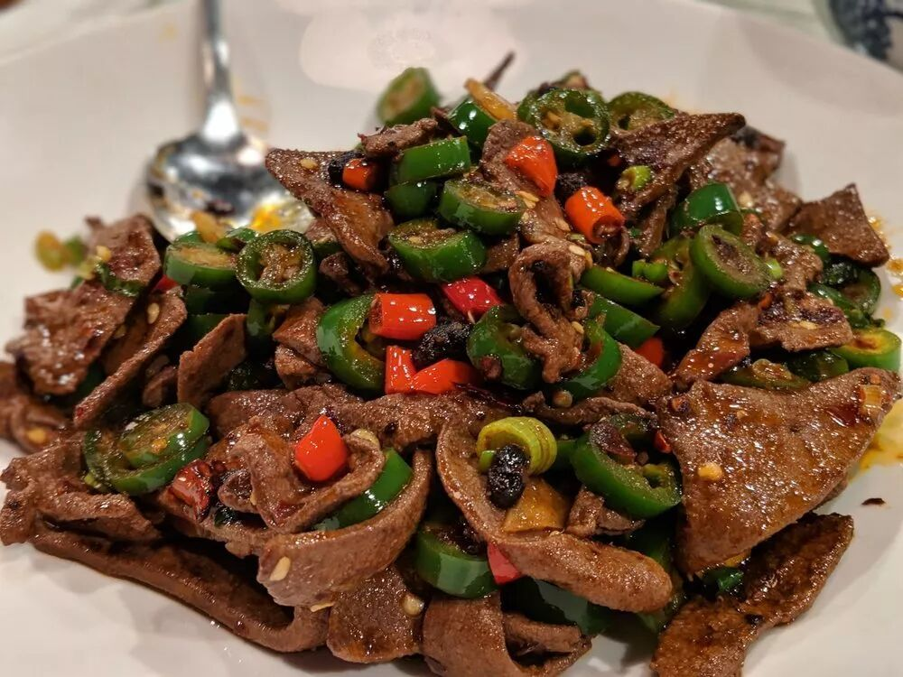
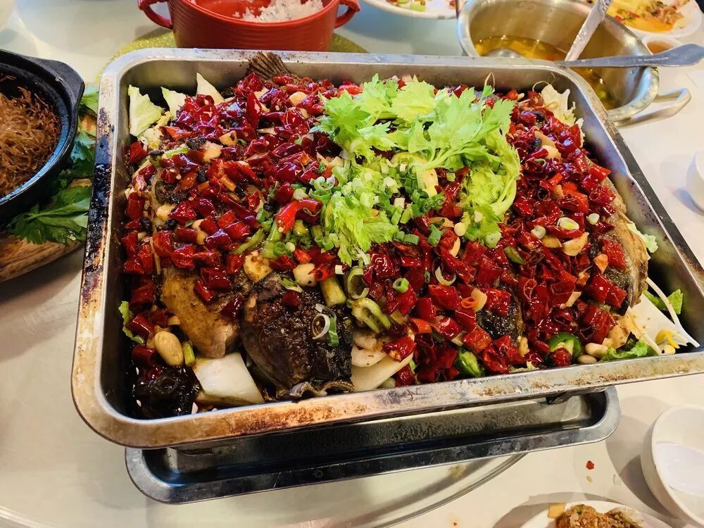
https://www.yelp.com/biz/hunan-impression-san-jose-3?osq=hunan+impression
2.留湘：Ping’s Bistro （Fremont店）
这家我觉得就没有啥不好吃的，不过排队的人真的贼多，周末经常一排就是45分钟朝上。
他们家不仅仅没有雷，还会有一些怪菜，比如炒汤圆啥的（后来发现似乎别的餐厅也有，不过这家是我第一次尝到这个菜）。
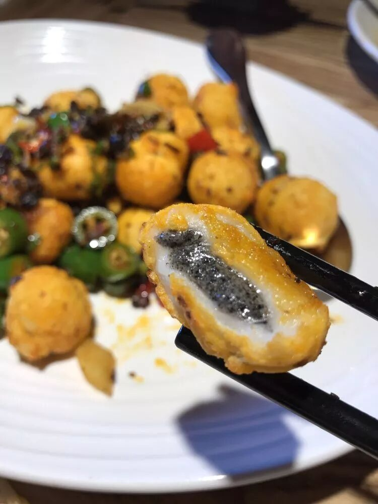
另外值得一提的是他们家的环境特别好，蛮适合带小姑娘去约会的，这一点在湾区的中餐馆里还蛮少见的。
https://www.yelp.com/biz/pings-bistro-fremont?osq=Ping%27s+Bistro
3.眷湘：Easterly (Santa Clara店)
这家感觉总体都蛮好吃的，相对于上面两家来说口味会稍微淡一些。他家还有一些蛮有特色的菜，比如三味茄子。
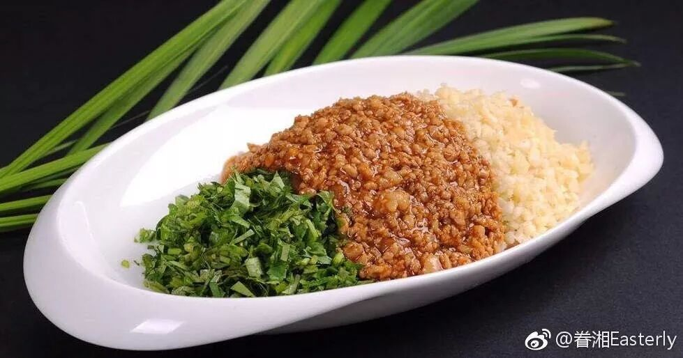
https://www.yelp.com/biz/easterly-santa-clara-2?osq=Easterly
4.辣道：Spicy way (Milpitas店)
他们家曾经是我的最爱，他们家刚开的时候经常去。不过有一次去吃的时候，要的菜都要了少辣，结果就不太好吃，估计师傅也不知道要怎么少辣同时还能做得好吃吧。
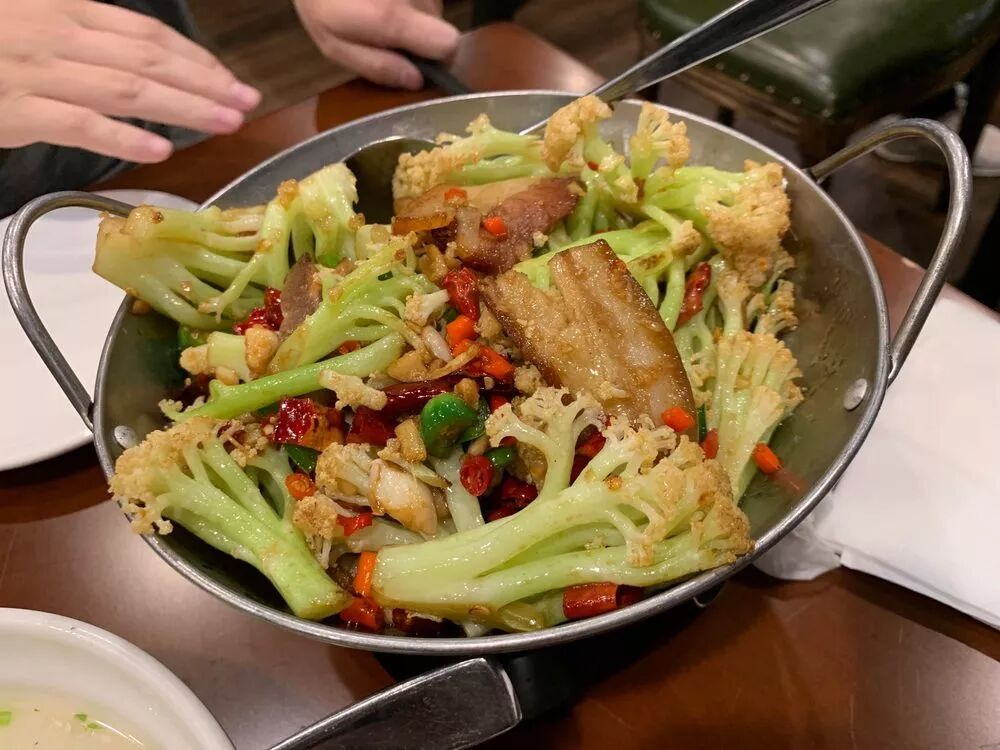
https://www.yelp.com/biz/spicy-way-%E8%BE%A3%E9%81%93-milpitas-7
5.菜根香：Wonderful （Milbrae店）
因为我曾经住在San Mateo附近，所以经常去这家。他们家的老板似乎自己读了个MBA，还把学位贴在了店门口这样子。
不得不说店里的管理真的做得非常到位，店员的服务非常好，所以也会有很多外国人来吃。
他们家的东西非常好吃，特别是他们的那个饼特别香，强烈推荐。
而且他们的菜在湖南菜里属于不太重的，吃起来负担不会很大。不过菜量感觉比较少，一份土鸡一会儿就吃完了。
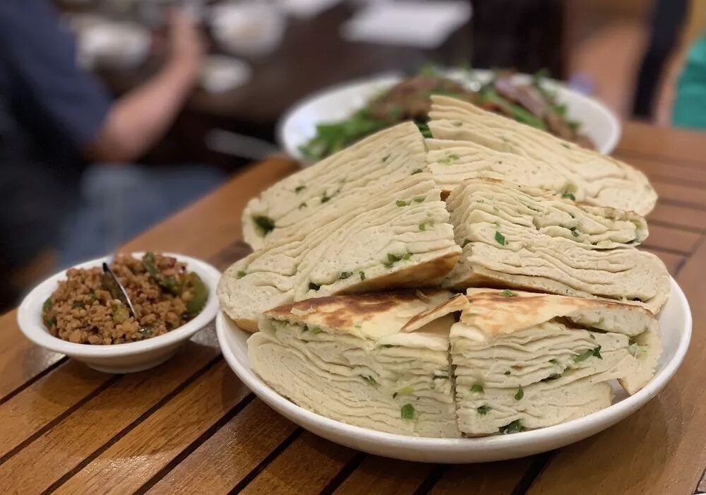
https://www.yelp.com/biz/wonderful-millbrae-2?osq=wonderful
6.Henry’s Hunan （1016 Bryan St 店）
Henry’s Hunan在城里有很多家店，但是只有在Airbnb附近的这家才是Airbnb员工Chi Zhang推荐的那家出了名的Henry’s Hunan，其它的Henry’s Hunan也会做针对中国人的菜，不过没有这家那么正宗。
曾经他们会把给中国人吃的湖南菜放在一个手抄的菜单上，不过现在似乎去吃的中国人多了，他们单独给做了正式的给中国人吃的菜单。
他们家属于那种口味超级重的。每次吃完以后，第二天拉屎菊花都会被辣到。不过吃的时候真的很好吃，具体可以看Chi Zhang的这篇大作
https://medium.com/@zhangchitc/airbnb-%E7%AC%AC%E4%BA%8C%E9%A3%9F%E5%A0%82-henry-s-hunan-4ef50f4ffc50
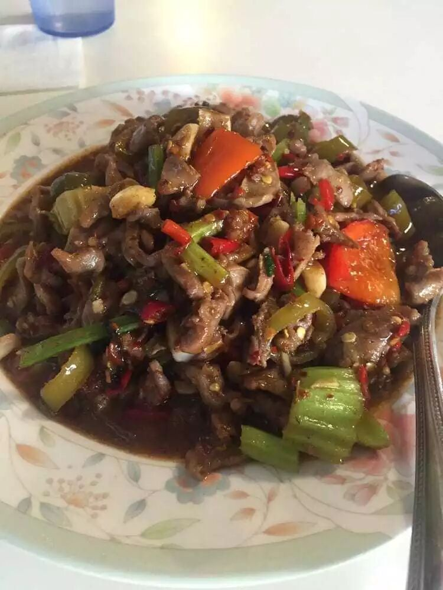
https://www.yelp.com/biz/henrys-hunan-san-francisco-4
7.福牛堂：Noodle Talk （Sunnyvale店）
他们家的米粉真的是有点出名的，尤其是他们家的汤是真的熬出来的牛骨汤，真的很鲜很鲜。可惜的就是他们家给的浇头有点少，不过少吃一点也是好事= =
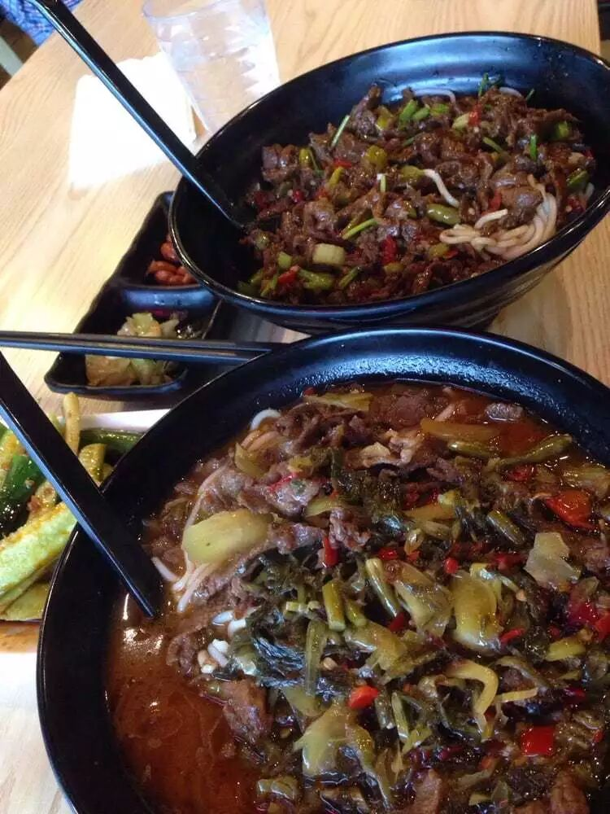
https://www.yelp.com/biz/noodle-talk-sunnyvale-2?osq=noodle+talk
8.土匪湘菜：Spices Fremont （Fremont店）
Yelp把他们家标成四川菜也是让我有点懵逼的。。。明明是湘菜好吗。
他们家的烤鱼特别好吃，鱼的表面脆脆的，还有一种特殊的香味。不过他们家也有一个缺点，就是感觉好多菜的味道都有点类似，都用那种特殊的香味来调味了。总之还是蛮好吃的，特别是烤鱼。
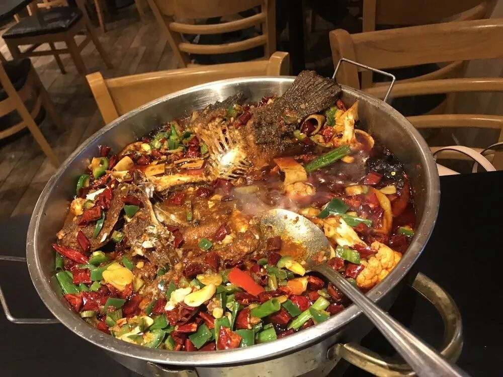
https://www.yelp.com/biz/spices-fremont-fremont?osq=%E5%9C%9F%E5%8C%AA%E6%B9%98%E8%8F%9C
9.福牛堂私房菜：Noodle Talk Home Cuisine (Los Altos店)
这家还是属于很好吃的，也上了小分队的年度榜单的。
不过他们家的菜的水准浮动比较大，有的特别好吃，有的就有点雷。
而且他们家的菜比较偏贵。印象中小炒肉和一些创新菜还蛮好吃的。还有他们家环境有点暗，有点类似于外国人喜欢的那种bar的氛围，所以也蛮适合约会的。
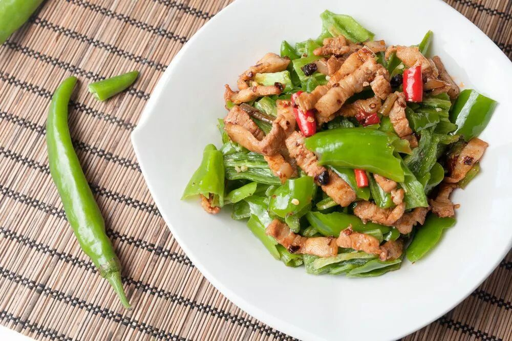
https://www.yelp.com/biz/noodle-talk-home-cuisine-los-altos?osq=noodle+talk
10.九味锅王：Sizzling Gourmet （Cupertino店）
这家主要是吃香锅的，香锅很好吃！不过除了香锅他们家还有一些菜，有点类似于湖南的感觉，也蛮好吃的。印象中他们家有一个擂椒茄子，蛮有特色的。
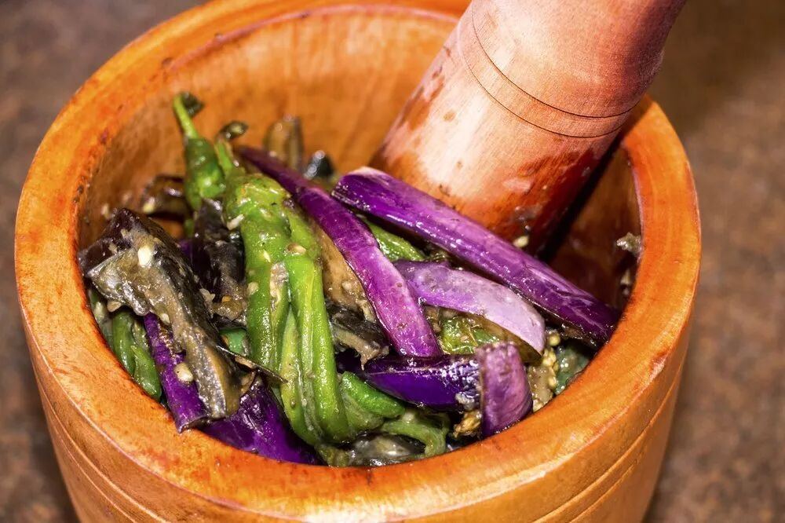
https://www.yelp.com/biz_photos/sizzling-gourmet-cupertino-7?start=60
第二梯队
放在第二梯队就属于还蛮不错的餐馆啦，
10.正宗毛家菜：The Noodle Shop （San Mateo店）
说到毛家菜肯定要提起毛氏红烧肉了。可能他们家的毛氏红烧肉是全湾区最有名的了吧，还蛮好吃的。
其它的菜印象不太深了，我也就很久之前去过一次。他们家不太辣，感觉不是典型的湖南风味，可能更近似毛氏风味？
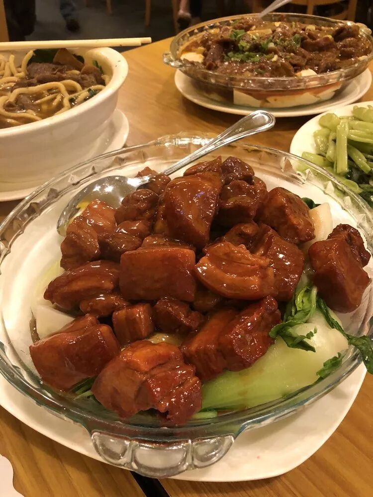
https://www.yelp.com/biz/noodle-shop-san-mateo?osq=The+Noodle+Shop
11.杨裕兴：Yum Noodles （Santa Clara店）
有人特别喜欢他们家，也有人觉得他们家一般。我感觉他们家还可以，不过肯定没有福牛堂那么好吃。
https://www.yelp.com/biz_photos/yum-noodles-santa-clara
12.Joy of Hunan （San Bruno店）
这家印象中有点一般。料都放到位了，但是感觉肉之类的不太入味，料都浮在表面没有进去。装修不错。
https://www.yelp.com/biz_photos/joy-of-hunan-san-bruno-2
13.四姐川湘：Hunan Cuisine （Fremont店）
这家也跟上面一家的缺点有点像。我吃了他们家水煮鱼，感觉虽然料比较重，但是不太入味。还有值得一提的是，他们家的装潢还蛮有自己的风格的，上一张图你们感受一下。
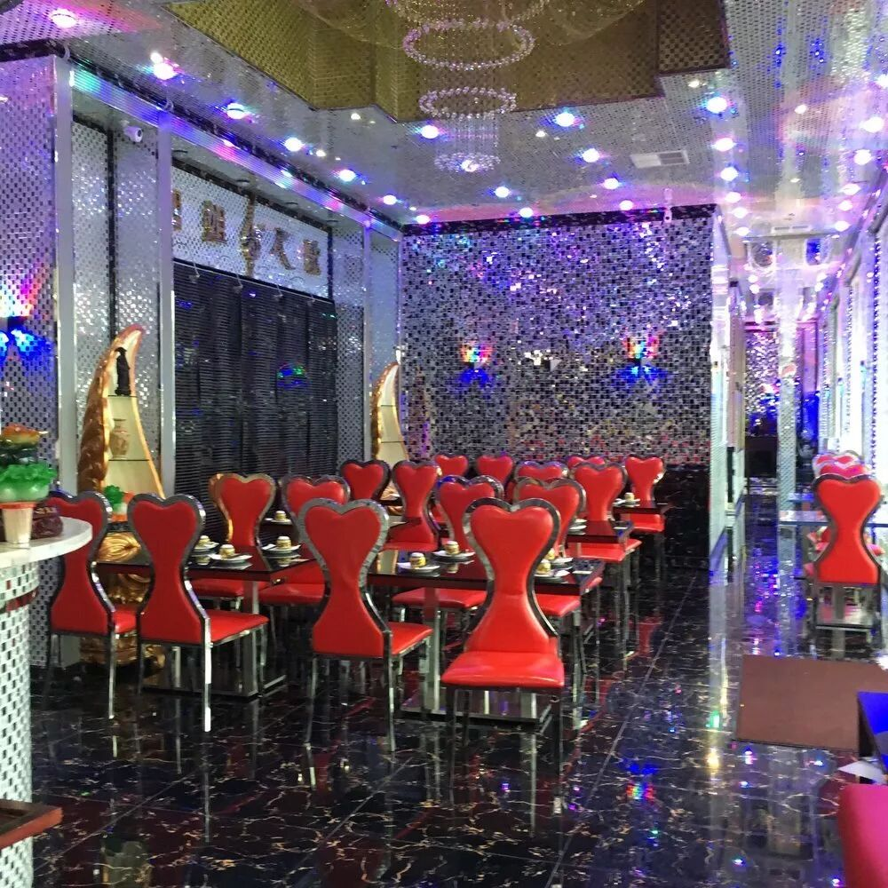
https://www.yelp.com/biz/hunan-cuisine-%E5%9B%9B%E5%A7%90%E5%B7%9D%E6%B9%98-fremont-19?osq=Hunan+Cuisine
14.百姓家：Bai Xing Jia Hunan Fushion （San Jose店）
这家的菜感觉蛮普通的，也没有什么大错，但是也没有特别好吃。
https://www.yelp.com/biz_photos/bai-xing-jia-hunan-fusion-san-jose-3?start=30
总结
写湖南菜感觉真的有点吃力，好多餐馆吃的次数真的不多，印象也有限，真的有点想不起来点过啥菜啥味道了。
而且我对于湖南菜的鉴赏能力实在有限，好多菜我觉得做得都蛮好吃的，很难分出个高下。
下周那篇准备先写写别的乱七八糟的东西休息一下~~如果还想看别的菜的话，可以给我留言以及帮我点“在看”，说不定我心血来潮就继续出续集了。